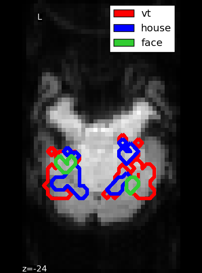

Small script to plot the masks of the Haxby dataset.
Out:
First subject anatomical nifti image (3D) is at: /home/parietal/gvaroqua/nilearn_data/haxby2001/subj2/anat.nii.gz
First subject functional nifti image (4D) is at: /home/parietal/gvaroqua/nilearn_data/haxby2001/subj2/bold.nii.gz
import numpy as np
from scipy import linalg
import matplotlib.pyplot as plt
from nilearn import datasets
haxby_dataset = datasets.fetch_haxby()
# print basic information on the dataset
print('First subject anatomical nifti image (3D) is at: %s' %
haxby_dataset.anat[0])
print('First subject functional nifti image (4D) is at: %s' %
haxby_dataset.func[0]) # 4D data
# Build the mean image because we have no anatomic data
from nilearn import image
func_filename = haxby_dataset.func[0]
mean_img = image.mean_img(func_filename)
z_slice = -14
from nilearn.image.resampling import coord_transform
affine = mean_img.affine
_, _, k_slice = coord_transform(0, 0, z_slice,
linalg.inv(affine))
k_slice = np.round(k_slice)
fig = plt.figure(figsize=(4, 5.4), facecolor='k')
from nilearn.plotting import plot_anat, show
display = plot_anat(mean_img, display_mode='z', cut_coords=[z_slice],
figure=fig)
mask_vt_filename = haxby_dataset.mask_vt[0]
mask_house_filename = haxby_dataset.mask_house[0]
mask_face_filename = haxby_dataset.mask_face[0]
display.add_contours(mask_vt_filename, contours=1, antialiased=False,
linewidths=4., levels=[0], colors=['red'])
display.add_contours(mask_house_filename, contours=1, antialiased=False,
linewidths=4., levels=[0], colors=['blue'])
display.add_contours(mask_face_filename, contours=1, antialiased=False,
linewidths=4., levels=[0], colors=['limegreen'])
# We generate a legend using the trick described on
# http://matplotlib.sourceforge.net/users/legend_guide.httpml#using-proxy-artist
from matplotlib.patches import Rectangle
p_v = Rectangle((0, 0), 1, 1, fc="red")
p_h = Rectangle((0, 0), 1, 1, fc="blue")
p_f = Rectangle((0, 0), 1, 1, fc="limegreen")
plt.legend([p_v, p_h, p_f], ["vt", "house", "face"])
show()
Total running time of the script: ( 0 minutes 5.272 seconds)